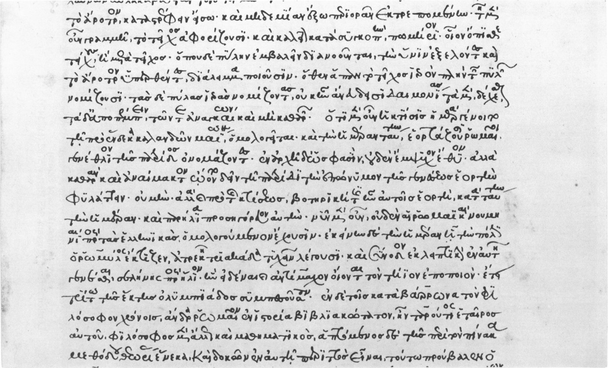

Optima Academy Online
An Education Experience Company
M/J CIVICS
Quarter / Module
Q1 · Module 1
Greco-Roman Foundations
Primary Source
1.10 Source 2
Author & Work
Plutarch, Life of Solon
Pairs With
1.8 Lesson · 1.11 Primary Source Report (Canvas, Tier 3)
1.10 Primary Source 2
Plutarch, Life of Solon, ch. 18
Read this, then complete 1.11 Primary Source Report in Canvas.
📖 CONTEXT
Writing centuries later, the biographer Plutarch describes the four property classes Solon created in 594 BC, and the popular courts Solon deliberately built into the system for the poorest citizens, the thetes. Read it alongside Lesson 1.1's account of Solon's bargain and Lesson 1.2's account of the institutions Cleisthenes later built on top of it.

📜 THE TEXT
“Solon… divided the people, according to their property, into four classes… To the first belonged those who paid five hundred measures of dry or liquid produce; and these were called Pentacosiomedimni. The second class… were called Knights. The Zeugitae composed the third class… The fourth class was called Thetes, who were not permitted to hold any office, but took part in the government only by voting in the assembly and sitting as jurors… which at first seemed nothing, but afterwards proved an incident of the greatest consequence, as the majority of controversies came in time to be determined by the jurors. Even in the cases which he assigned to the archons' cognizance, he allowed an appeal to the courts. Moreover, it is said that he was ambiguous and vague on purpose in drawing up his laws, in order to increase the power of the popular courts. For since their differences could not be adjusted by the letter of the law, they would always have to bring their disputes to the judges, who thus were in a manner masters of the laws.”
(Dryden/Clough translation, condensed for length.)
➡️ WHAT YOU'LL DO NEXT
1
1.11 Primary Source Report (Canvas, Tier 3)
A short Word document (250–400 words) quoting directly from both this week's primary sources, Aristotle's Constitution of the Athenians and this excerpt from Plutarch. Includes the course's first M365 Skill Step box.
Optima Academy Online · M/J CIVICS · Quarter 1 · Primary Source Page
Week 1 · Plutarch, Life of Solon
© Optima Academy Online · An Education Experience Company